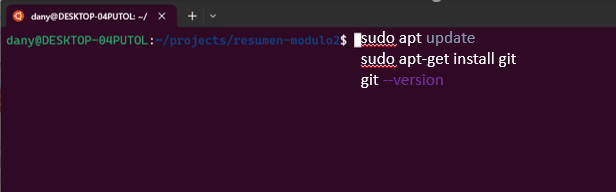

Resumen del modulo 2: habilidades del Frontend con HTML Y CSS
El desarrollo frontend es la práctica de convertir datos en una interfaz gráfica, a través del uso de HTML, CSS y JavaScript, para que los usuarios puedan interactuar con ella. HTML (Lenguaje de Marcas de Hipertexto) se utiliza para estructurar el contenido en la web, mientras que CSS (Hojas de Estilo en Cascada) se usa para controlar el diseño y el estilo de la página web. Los desarrolladores frontend toman el diseño del sitio web y construyen una versión funcional de él en el navegador
TERMINAL DE COMANDOS
Que es la terminal de comandos
La terminal de Linux, también conocida como línea de comandos o consola, es una interfaz de texto que permite al usuario interactuar directamente con el sistema operativo, en lugar de usar un ratón para hacer clic en botones y menús, en la terminal se introducen comandos de texto para realizar tareas.
La terminal se utiliza para una variedad de tareas, como administrar archivos y directorios, instalar y desinstalar programas, y configurar el sistema operativo, también es una herramienta poderosa para programar y resolver problemas en el sistema.
Aquí tienes algunos comandos básicos que puedes usar en la terminal de Linux:
Comando "CD"
cd: Cambia el directorio actual. Por ejemplo, cd Documentos te moverá al directorio Documentos
Comando "LS"
ls: Lista los archivos y directorios en el directorio actual
Comando "PWD"
pwd: Muestra el camino del directorio actual
Comando "CP"
cp: Copia archivos y directorios. Por ejemplo, cp index.html index2 copiará el contenido de index.html a index2
Comando "RM"
rm: Elimina archivos y directorios. Por ejemplo, rm index2 eliminará el archivo llamado index2

GIT Y GITHUB
Qué es GIT
Git es un sistema de control de versiones. Esto significa que Git te ayuda a gestionar tus archivos de proyecto y mantiene un registro de todo el historial de las cosas en las que estás trabajando. Esto es especialmente útil para los desarrolladores, ya que cuando se trabaja en un proyecto, lo que primero se construye es una versión básica del mismo y luego se trata de mejorar añadiendo nuevas características o simplemente experimentando con lo ya escrito. El control de versiones entra en juego aquí, puesto que realiza un seguimiento automático de cada minuto de cambios en tu proyecto y te permite volver a una versión anterior sin importar cuántas veces hayan cambiado tus archivos
Qué es GITHUB
GitHub es una plataforma basada en la nube construida alrededor de Git. La diferencia principal entre Git y GitHub es que Git es una herramienta open source que los desarrolladores instalan localmente para gestionar el código fuente, mientras que GitHub es un servicio en línea al que los desarrolladores que utilizan Git pueden conectarse y cargar o descargar recursos.

Como instalar GIT
Abre tu terminal de Linux y escribe los siguientes comandos para instalar git en la computadora

Configuración de GIT
Despues de instalar git en la computadora, se debe de configurar con tu nombre de usuario y correo electrónico para asociar tus cambios con tu identidad con los siguientes comandos:

Inicia Git
En tu proyecto local en tu computadora, inicializas un repositorio Git con el comando git init. Esto crea un nuevo repositorio Git en tu directorio actual, permitiendo a Git rastrear los cambios en tus archivos
Agrega al Stating y Repositorio
Haces cambios en tus archivos y luego los agregas al área de preparación de Git con el comando git add ., que agrega todos tus archivos modificados al área de preparación de Git
Una vez que estás satisfecho con tus cambios, los confirmas con el comando git commit -m "Mensaje descriptivo". Esto toma una "instantánea" de tus cambios y los guarda en el historial de tu proyecto
Crea una cuenta en GITHUB y vinculalo con tu repositorio de GIT
Ve a la página de https://github.com y crea una cuenta.
Crea un nuevo repositorio en la opción de repositorio “NEW”.
Coloca el nombre de tu preferencia y le das a crear.
Copia la clave SSH.
Esta clave la vas a copiar en la terminal seguido del comando git remote add origin seguido de la clave SSH.
Sube tus proyecto a GITHUB
Finalmente, subes tus cambios a GitHub con el comando git push origin master, que sube tus cambios al repositorio remoto en GitHub
HTML - Lenguaje de Marcas de Hipertexto
Qué es HTML
HTML, que significa Lenguaje de Marcas de Hipertexto (HyperText Markup Language en inglés), es un lenguaje de marcado que se utiliza para estructurar y organizar el contenido en una página.
Un documento HTML se compone de varios elementos, que son las piezas fundamentales que construyen la página web. Los elementos de HTML constan de varias partes, incluyendo las etiquetas de apertura y cierre, el contenido y los atributos.
Aqui te muestro como se ve una pequeña parte de un HTML.
Que son las etiquetas
Las etiquetas HTML son bloques de código que dan formato, funcionalidad y estructura al contenido de las páginas web.
Estos fragmentos sirven como indicadores o instrucciones para que un navegador muestre de forma adecuada la información contenida en tus documentos.
Las etiquetas HTML se utilizan para configurar diversas estructuras para los sitios web, como secciones, tablas, párrafos, enlaces y atributos.
En este ejemplo, <html>, <head>, <title>, <body>, <h1>, <p> son etiquetas de HTML. Entre las etiquetas se encuentra el contenido.
Existen muchas otras etiquetas HTML disponibles que puedes utilizar para crear varios aspectos de tu sitio web. Por ejemplo, la etiqueta <img> se utiliza para insertar una imagen, la etiqueta <a> se utiliza para crear un enlace, la etiqueta <table> se utiliza para crear una tabla, y la etiqueta <form> se utiliza para crear un formulario html desde cero.
Es importante mencionar que todas las etiquetas HTML deben cerrarse, a menos que sean etiquetas de autocierre. Por ejemplo, la etiqueta <br> es una etiqueta de autocierre, lo que significa que no necesita una etiqueta de cierre
Que son los atributos
Los atributos en HTML son valores adicionales que se pueden agregar a las etiquetas HTML para proporcionar información adicional sobre el elemento o ajustar su comportamiento. Estos atributos consisten en un nombre y un valor. Los atributos se colocan dentro de la etiqueta de apertura y son sensibles a mayúsculas y minúsculas
En la imagen se muestran algunos ejemplos de atributos en HTML:
id: Este atributo se utiliza para especificar un identificador único para un elemento.
style: Este atributo se utiliza para aplicar estilos CSS en línea a un elemento.
href: Este atributo se utiliza con la etiqueta <a> para especificar el enlace URL.
src: Este atributo se utiliza con la etiqueta <img> para especificar la URL de la imagen que se va a mostrar.
alt: Este atributo se utiliza con la etiqueta <img> para proporcionar un texto alternativo que se muestra si la imagen no se puede cargar.
CSS - HOJA DE ESTILOS EN CASCADA
Qué es CSS
CSS significa Hojas de Estilo en Cascada (Cascading Style Sheets en inglés), es un lenguaje de hojas de estilo utilizado para describir la apariencia de un documento escrito en HTML.
Con CSS, puedes controlar el diseño de una página web, incluyendo colores, fuentes, márgenes, altura, ancho y otros aspectos visuales.
Qué es FLEXBOX
Flexbox (Flexible Box Layout) es un módulo de CSS que permite alinear y distribuir espacio entre los elementos de una página web, especialmente cuando las dimensiones de esos elementos son desconocidas o dinámicas. Por ejemplo, puedes usar Flexbox para crear una lista de elementos que se ajusta automáticamente al tamaño de la pantalla, con un espacio igual entre cada elemento.
En este ejemplo, .contenedor es una clase que se aplica a un elemento div en tu HTML. El display: flex; hace que los elementos hijos de este div se dispongan en una línea flexible. El justify-content: space-between; distribuye el espacio restante de manera uniforme entre los elementos
Qué es GRID
CSS Grid, por otro lado, es una herramienta más avanzada que te permite crear diseños de cuadrícula complejos y responsivos. Puedes usar Grid para crear una cuadrícula de filas y columnas, y colocar elementos en cualquier lugar de esta cuadrícula. Por ejemplo, podrías usar Grid para crear una página con una barra lateral y un área de contenido principal, y hacer que ambos se ajusten automáticamente al tamaño de la pantalla.
¡Espero te sirva y te vuelvas un gran Frontend Developer!
Si tienes alguna pregunta escríbeme a
danielys@gmail.com